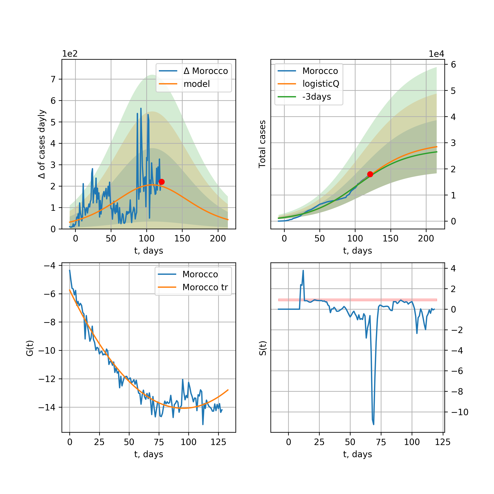

Multi-logistic model of COVID-19 dynamics
Model, code, results
Project maintained by algmaknick Hosted on GitHub Pages — Theme by mattgraham
World

World data at: 2020-05-21
+3 day model MAPE: 0.019534
model: bi-Richards
coeffs: [ 6.74560277e+06 3.75759084e+00 -4.16945293e+01 9.78955760e-03]
S.Korea scenario coeffs: [0.36242246, 2.56241634, 1.84890887, 0.13324732]
rational stdev: 0.245315
forecast at the end of period: +486 days
deltaDaycases: 4192
total cases: 9170457 ± 2249647
total death: 590781 ± 434781
bi-Richards approximation splitting point: 55
trend coefficient of determination: 0.356557
intercept: -1.901362
slope: -0.041462
trend coefficient of determination: 0.928641
intercept: -0.560079
slope: -0.032254
European Union

European Union data at: 2020-05-21
+3 day model MAPE: 0.009793
model: logisticQ
coeffs: [ 1.11788147e+06 5.50418542e-07 5.04046719e+01 -1.99501431e+05]
S.Korea scenario coeffs: [0.35416971, 0.02606324, 4.35859408, 19.30413219]
rational stdev: 0.427355
forecast at the end of period: +261 days
deltaDaycases: 12
total cases: 1513589 ± 646839
total death: 161473 ± 207018
trend coefficient of determination: 0.989160
intercept_: -3.0844677524891004
coeffs_: [ 0. -0.32252653 0.00161536]
USA

USA data at: 2020-05-21
+3 day model MAPE: 0.010717
model: Richards
coeffs: [ 1.95277110e+06 4.34418691e+00 -5.65796039e+01 1.08170465e-02]
S.Korea scenario coeffs: [0.36242246, 2.56241634, 1.84890887, 0.13324732]
rational stdev: 0.328328
forecast at the end of period: +338 days
deltaDaycases: 1696
total cases: 2545590 ± 835788
total death: 151321 ± 149048
trend coefficient of determination: 0.950949
intercept: -1.017648
slope: -0.045541
Spain

Spain data at: 2020-05-21
+3 day model MAPE: 0.004588
model: Richards
coeffs: [ 2.90019348e+05 7.98245238e+00 -4.87315106e+01 7.85074127e-03]
S.Korea scenario coeffs: [0.36242246, 2.56241634, 1.84890887, 0.13324732]
rational stdev: 0.223865
forecast at the end of period: +296 days
deltaDaycases: 102
total cases: 390249 ± 87363
total death: 38925 ± 26141
trend coefficient of determination: 0.950228
intercept: -0.739204
slope: -0.060268
Italy

Italy data at: 2020-05-21
+3 day model MAPE: 0.001390
model: Richards
coeffs: [ 2.35580455e+05 6.12610135e+00 -5.08857805e+01 9.82500860e-03]
S.Korea scenario coeffs: [0.36242246, 2.56241634, 1.84890887, 0.13324732]
rational stdev: 0.069683
forecast at the end of period: +268 days
deltaDaycases: 140
total cases: 313879 ± 21872
total death: 44721 ± 9348
trend coefficient of determination: 0.984168
intercept: -1.080414
slope: -0.057246
United Kingdom

United Kingdom data at: 2020-05-21
+3 day model MAPE: 0.002591
model: Richards
coeffs: [ 3.09449367e+05 3.69437303e+00 -5.80142914e+01 1.29596998e-02]
S.Korea scenario coeffs: [0.36242246, 2.56241634, 1.84890887, 0.13324732]
rational stdev: 0.121760
forecast at the end of period: +366 days
deltaDaycases: 147
total cases: 412219 ± 50191
total death: 59213 ± 21629
trend coefficient of determination: 0.953965
intercept: -1.385988
slope: -0.045927
France

France data at: 2020-05-21
+3 day model MAPE: 0.004114
model: Richards
coeffs: [1.79859976e+05 3.35005151e-01 1.87909588e+01 3.02202103e-01]
S.Korea scenario coeffs: [0.36242246, 2.56241634, 1.84890887, 0.13324732]
rational stdev: 0.241459
forecast at the end of period: +128 days
deltaDaycases: 142
total cases: 240844 ± 58154
total death: 37373 ± 27072
trend coefficient of determination: 0.946401
intercept: -2.577912
slope: -0.092018
Germany

Germany data at: 2020-05-21
+3 day model MAPE: 0.004325
model: Richards
coeffs: [ 1.77608197e+05 8.29314020e+00 -3.92348550e+01 9.92525889e-03]
S.Korea scenario coeffs: [0.36242246, 2.56241634, 1.84890887, 0.13324732]
rational stdev: 0.582217
forecast at the end of period: +198 days
deltaDaycases: 94
total cases: 238578 ± 138904
total death: 11073 ± 19340
trend coefficient of determination: 0.956372
intercept: -1.181744
slope: -0.067371
Turkey

Turkey data at: 2020-05-21
+3 day model MAPE: 0.007074
model: Richards
coeffs: [ 1.60250041e+05 6.68352331e+00 -3.57995996e+01 1.09728198e-02]
S.Korea scenario coeffs: [0.36242246, 2.56241634, 1.84890887, 0.13324732]
rational stdev: 0.223784
forecast at the end of period: +196 days
deltaDaycases: 234
total cases: 208087 ± 46566
total death: 5758 ± 3865
trend coefficient of determination: 0.760347
intercept: -0.964846
slope: -0.058576
Russia

Russia data at: 2020-05-21
+3 day model MAPE: 0.010404
model: logisticQ
coeffs: [ 3.97080453e+05 3.96571903e-06 6.18942004e+01 -2.78726834e+04]
S.Korea scenario coeffs: [0.35416971, 0.02606324, 4.35859408, 19.30413219]
rational stdev: 0.412950
forecast at the end of period: +282 days
deltaDaycases: 65
total cases: 536564 ± 221574
total death: 5236 ± 6486
trend coefficient of determination: 0.968530
intercept_: -3.485601917720742
coeffs_: [ 0. -0.22472906 0.00079603]
Iran

Iran data at: 2020-05-21
+3 day model MAPE: 0.016548
model: bi-Richards
coeffs: [6.32148997e+04 7.02530954e+00 2.63080024e+01 1.14965750e-02]
S.Korea scenario coeffs: [0.36242246, 2.56241634, 1.84890887, 0.13324732]
rational stdev: 0.309336
forecast at the end of period: +310 days
deltaDaycases: 29
total cases: 187536 ± 58011
total death: 10510 ± 9753
bi-Richards approximation splitting point: 75
trend coefficient of determination: 0.949244
intercept: -0.914960
slope: -0.055142
trend coefficient of determination: 0.448033
intercept: -5.630645
slope: 0.016175
Brazil

Brazil data at: 2020-05-21
+3 day model MAPE: 0.048986
model: logisticQ
coeffs: [ 8.49120606e+05 7.77820088e-06 7.94527876e+01 -9.99534968e+03]
S.Korea scenario coeffs: [0.35416971, 0.02606324, 4.35859408, 19.30413219]
rational stdev: 0.400052
forecast at the end of period: +331 days
deltaDaycases: 1056
total cases: 1120455 ± 448240
total death: 72368 ± 86852
trend coefficient of determination: 0.881925
intercept_: -4.183628771247205
coeffs_: [ 0. -0.2812561 0.00182051]

Brazil data at: 2020-05-21
+3 day model MAPE: 0.024190
model: Richards
coeffs: [9.62176084e+06 1.75599887e-01 2.39426414e+01 1.05862267e-01]
S.Korea scenario coeffs: [0.36242246, 2.56241634, 1.84890887, 0.13324732]
rational stdev: 0.353271
forecast at the end of period: +1346 days
deltaDaycases: 260
total cases: 13067713 ± 4616449
total death: 844027 ± 894511
trend coefficient of determination: 0.165672
intercept: -2.601221
slope: -0.023675
Canada

Canada data at: 2020-05-21
+3 day model MAPE: 0.000564
model: Richards
coeffs: [ 1.06347346e+05 2.63872350e+00 -6.29500600e+01 1.66432383e-02]
S.Korea scenario coeffs: [0.36242246, 2.56241634, 1.84890887, 0.13324732]
rational stdev: 0.174784
forecast at the end of period: +420 days
deltaDaycases: 32
total cases: 142684 ± 24938
total death: 10793 ± 5659
trend coefficient of determination: 0.956602
intercept: -1.561661
slope: -0.046358
Belgium

Belgium data at: 2020-05-21
+3 day model MAPE: 0.002081
model: Richards
coeffs: [ 5.83789823e+04 1.09397799e+00 -1.43562785e+01 6.52882174e-02]
S.Korea scenario coeffs: [0.36242246, 2.56241634, 1.84890887, 0.13324732]
rational stdev: 0.480946
forecast at the end of period: +198 days
deltaDaycases: 43
total cases: 77684 ± 37361
total death: 12689 ± 18308
trend coefficient of determination: 0.949572
intercept: -1.551228
slope: -0.063330
Peru

Peru data at: 2020-05-21
+3 day model MAPE: 0.042677
model: logisticQ
coeffs: [ 1.49334555e+05 2.76815231e-06 5.79111727e+01 -3.47015869e+04]
S.Korea scenario coeffs: [0.35416971, 0.02606324, 4.35859408, 19.30413219]
rational stdev: 0.377314
forecast at the end of period: +240 days
deltaDaycases: 162
total cases: 198699 ± 74972
total death: 5750 ± 6508
trend coefficient of determination: 0.974475
intercept_: -3.755298911697926
coeffs_: [ 0. -0.27454821 0.00173562]
Netherlands

Netherlands data at: 2020-05-21
+3 day model MAPE: 0.000186
model: Richards
coeffs: [4.61349417e+04 4.51812196e-01 3.77635733e+00 1.63133287e-01]
S.Korea scenario coeffs: [0.36242246, 2.56241634, 1.84890887, 0.13324732]
rational stdev: 0.162733
forecast at the end of period: +198 days
deltaDaycases: 23
total cases: 61907 ± 10074
total death: 7998 ± 3904
trend coefficient of determination: 0.976235
intercept: -1.722914
slope: -0.073964
India

India data at: 2020-05-21
+3 day model MAPE: 0.016424
model: Richards
coeffs: [ 1.50777720e+06 5.80918620e-01 -5.56087592e+01 3.24816100e-02]
S.Korea scenario coeffs: [0.36242246, 2.56241634, 1.84890887, 0.13324732]
rational stdev: 0.351023
forecast at the end of period: +926 days
deltaDaycases: 553
total cases: 1959846 ± 687950
total death: 59412 ± 62564
trend coefficient of determination: 0.511785
intercept: -1.752212
slope: -0.021691
Switzerland

Switzerland data at: 2020-05-21
+3 day model MAPE: 0.003060
model: logisticQ
coeffs: [ 2.99227775e+04 6.90518497e-07 2.58752185e+01 -2.10710100e+05]
S.Korea scenario coeffs: [0.35416971, 0.02606324, 4.35859408, 19.30413219]
rational stdev: 0.343588
forecast at the end of period: +86 days
deltaDaycases: 18
total cases: 40276 ± 13838
total death: 2490 ± 2566
trend coefficient of determination: 0.983585
intercept_: -3.8104420953511386
coeffs_: [ 0. -0.3166886 0.00191119]
Ecuador

Ecuador data at: 2020-05-21
+3 day model MAPE: 0.005254
model: Richards
coeffs: [ 6.45552162e+04 2.65418501e+00 -9.71565256e+01 1.16226376e-02]
S.Korea scenario coeffs: [0.36242246, 2.56241634, 1.84890887, 0.13324732]
rational stdev: 0.315773
forecast at the end of period: +646 days
deltaDaycases: 12
total cases: 86698 ± 27377
total death: 7217 ± 6836
trend coefficient of determination: 0.198362
intercept: -1.965382
slope: -0.042906
Portugal

Portugal data at: 2020-05-21
+3 day model MAPE: 0.008462
model: Richards
coeffs: [ 3.04939725e+04 6.60331688e+00 -4.18151168e+01 1.01328455e-02]
rational stdev: 0.176366
forecast at the end of period: +226 days
deltaDaycases: 0
total cases: 30493 ± 5378
total death: 1301 ± 688
trend coefficient of determination: 0.900652
intercept: -0.849236
slope: -0.059516
Saudi Arabia

Saudi Arabia data at: 2020-05-21
+3 day model MAPE: 0.022270
model: Richards
coeffs: [ 2.75159186e+05 7.54876237e-01 -3.67983223e+01 3.59480102e-02]
S.Korea scenario coeffs: [0.36242246, 2.56241634, 1.84890887, 0.13324732]
rational stdev: 0.296237
forecast at the end of period: +674 days
deltaDaycases: 92
total cases: 364344 ± 107932
total death: 1965 ± 1746
trend coefficient of determination: 0.084829
intercept: -2.246680
slope: -0.015332
Sweden

Sweden data at: 2020-05-21
+3 day model MAPE: 0.005105
model: Richards
coeffs: [ 4.65256539e+04 2.05981662e+00 -6.38533202e+01 1.71815518e-02]
S.Korea scenario coeffs: [0.36242246, 2.56241634, 1.84890887, 0.13324732]
rational stdev: 0.265912
forecast at the end of period: +436 days
deltaDaycases: 34
total cases: 60187 ± 16004
total death: 7241 ± 5776
trend coefficient of determination: 0.830538
intercept: -1.380927
slope: -0.037327
Pakistan

Pakistan data at: 2020-05-21
+3 day model MAPE: 0.022389
model: Richards
coeffs: [ 8.55811217e+05 3.03169679e-01 -3.04907520e+01 5.49450980e-02]
S.Korea scenario coeffs: [0.36242246, 2.56241634, 1.84890887, 0.13324732]
rational stdev: 0.391701
forecast at the end of period: +1206 days
deltaDaycases: 111
total cases: 1145725 ± 448781
total death: 24229 ± 28471
trend coefficient of determination: 0.303572
intercept: -2.244856
slope: -0.018868
Ireland

Ireland data at: 2020-05-21
+3 day model MAPE: 0.005774
model: logisticQ
coeffs: [ 2.41637507e+04 2.22029537e-06 3.52957033e+01 -5.70179245e+04]
S.Korea scenario coeffs: [0.35416971, 0.02606324, 4.35859408, 19.30413219]
rational stdev: 0.319613
forecast at the end of period: +128 days
deltaDaycases: 28
total cases: 32265 ± 10312
total death: 2094 ± 2007
trend coefficient of determination: 0.981507
intercept_: -3.842614006437014
coeffs_: [ 0. -0.26894053 0.00152467]
Mexico

Mexico data at: 2020-05-21
+3 day model MAPE: 0.010890
model: Richards
coeffs: [ 3.67073194e+05 5.42758163e-01 -4.66239860e+01 4.43689771e-02]
S.Korea scenario coeffs: [0.36242246, 2.56241634, 1.84890887, 0.13324732]
rational stdev: 0.131674
forecast at the end of period: +786 days
deltaDaycases: 82
total cases: 489639 ± 64472
total death: 53512 ± 21138
trend coefficient of determination: 0.863891
intercept: -1.992212
slope: -0.027868
Singapore

Singapore data at: 2020-05-21
+3 day model MAPE: 0.017895
model: bi-Richards
coeffs: [2.21005368e+04 9.57177961e+00 2.77845139e+01 8.84814475e-03]
S.Korea scenario coeffs: [0.36242246, 2.56241634, 1.84890887, 0.13324732]
rational stdev: 0.273622
forecast at the end of period: +226 days
deltaDaycases: 41
total cases: 37836 ± 10352
total death: 29 ± 23
bi-Richards approximation splitting point: 60
trend coefficient of determination: 0.125873
intercept: -2.321322
slope: -0.021678
trend coefficient of determination: 0.512161
intercept: -0.500961
slope: -0.028102
Chile

Chile data at: 2020-05-21
+3 day model MAPE: 0.062309
model: bi-Richards
coeffs: [ 3.82847592e+05 1.33932650e+00 -2.21637365e+01 2.74299145e-02]
S.Korea scenario coeffs: [0.36242246, 2.56241634, 1.84890887, 0.13324732]
rational stdev: 0.022025
forecast at the end of period: +611 days
deltaDaycases: 66
total cases: 532737 ± 11733
total death: 5449 ± 360
bi-Richards approximation splitting point: 40
trend coefficient of determination: 0.829899
intercept: -2.043737
slope: -0.044518
trend coefficient of determination: 0.011678
intercept: -3.303046
slope: 0.003424
Israel

Israel data at: 2020-05-21
+3 day model MAPE: 0.001943
model: Richards
coeffs: [ 1.70515699e+04 6.43111297e+00 -3.67763089e+01 1.37701544e-02]
S.Korea scenario coeffs: [0.36242246, 2.56241634, 1.84890887, 0.13324732]
rational stdev: 0.158199
forecast at the end of period: +198 days
deltaDaycases: 5
total cases: 23062 ± 3648
total death: 385 ± 182
trend coefficient of determination: 0.925544
intercept: -1.027514
slope: -0.091953
Austria

Austria data at: 2020-05-21
+3 day model MAPE: 0.005385
model: logisticQ
coeffs: [ 1.55343971e+04 8.22472219e-07 2.37202182e+01 -2.27489258e+05]
S.Korea scenario coeffs: [0.35416971, 0.02606324, 4.35859408, 19.30413219]
rational stdev: 0.323540
forecast at the end of period: +72 days
deltaDaycases: 7
total cases: 20962 ± 6782
total death: 808 ± 784
trend coefficient of determination: 0.981149
intercept_: -2.7666120741089184
coeffs_: [ 0. -0.35608803 0.00244164]
Belarus

Belarus data at: 2020-05-21
+3 day model MAPE: 0.008109
model: Richards
coeffs: [ 5.88259981e+04 2.33523012e+00 -5.83735863e+01 1.90501393e-02]
S.Korea scenario coeffs: [0.36242246, 2.56241634, 1.84890887, 0.13324732]
rational stdev: 0.141076
forecast at the end of period: +366 days
deltaDaycases: 42
total cases: 77116 ± 10879
total death: 427 ± 180
trend coefficient of determination: 0.866445
intercept: -1.659603
slope: -0.043919
Japan

Japan data at: 2020-05-21
+3 day model MAPE: 0.004930
model: Richards
coeffs: [1.63254957e+04 1.08537812e-01 7.78882787e+01 1.27094441e+00]
S.Korea scenario coeffs: [0.36242246, 2.56241634, 1.84890887, 0.13324732]
rational stdev: 0.897152
forecast at the end of period: +156 days
deltaDaycases: 4
total cases: 22141 ± 19864
total death: 1047 ± 2817
trend coefficient of determination: 0.775165
intercept: -6.386396
slope: -0.099867
Qatar

Qatar data at: 2020-05-21
+3 day model MAPE: 0.008634
model: Richards
coeffs: [ 2.52295278e+05 5.87659556e-01 -6.21269666e+01 3.93235365e-02]
S.Korea scenario coeffs: [0.36242246, 2.56241634, 1.84890887, 0.13324732]
rational stdev: 0.084450
forecast at the end of period: +940 days
deltaDaycases: 22
total cases: 340898 ± 28788
total death: 149 ± 37
trend coefficient of determination: 0.161548
intercept: -2.766028
slope: -0.011592
Poland

Poland data at: 2020-05-21
+3 day model MAPE: 0.022031
model: Richards
coeffs: [ 2.57909080e+04 4.15391513e+00 -7.31048757e+01 9.86133396e-03]
S.Korea scenario coeffs: [0.36242246, 2.56241634, 1.84890887, 0.13324732]
rational stdev: 0.302490
forecast at the end of period: +408 days
deltaDaycases: 16
total cases: 33888 ± 10250
total death: 1635 ± 1483
trend coefficient of determination: 0.780437
intercept: -1.297906
slope: -0.041076
UAE

UAE data at: 2020-05-21
+3 day model MAPE: 0.031392
model: Richards
coeffs: [ 6.09214120e+04 1.59672353e+00 -8.70666009e+01 1.90805824e-02]
S.Korea scenario coeffs: [0.36242246, 2.56241634, 1.84890887, 0.13324732]
rational stdev: 0.162855
forecast at the end of period: +450 days
deltaDaycases: 63
total cases: 75509 ± 12297
total death: 665 ± 324
trend coefficient of determination: 0.820689
intercept: -2.023443
slope: -0.033833
Romania

Romania data at: 2020-05-21
+3 day model MAPE: 0.002473
model: Richards
coeffs: [ 2.12769222e+04 3.80561224e+00 -5.66175344e+01 1.25580492e-02]
S.Korea scenario coeffs: [0.36242246, 2.56241634, 1.84890887, 0.13324732]
rational stdev: 0.175690
forecast at the end of period: +338 days
deltaDaycases: 15
total cases: 27971 ± 4914
total death: 1838 ± 968
trend coefficient of determination: 0.904964
intercept: -1.258475
slope: -0.045930
Ukraine

Ukraine data at: 2020-05-21
+3 day model MAPE: 0.001025
model: Richards
coeffs: [ 2.91456443e+04 1.33140994e+00 -3.34344939e+01 3.48008428e-02]
S.Korea scenario coeffs: [0.36242246, 2.56241634, 1.84890887, 0.13324732]
rational stdev: 0.178208
forecast at the end of period: +366 days
deltaDaycases: 14
total cases: 38727 ± 6901
total death: 1137 ± 607
trend coefficient of determination: 0.701492
intercept: -1.466707
slope: -0.043497
Indonesia

Indonesia data at: 2020-05-21
+3 day model MAPE: 0.032222
model: Richards
coeffs: [ 4.35216053e+04 2.29758956e+00 -1.09471542e+02 1.19409270e-02]
S.Korea scenario coeffs: [0.36242246, 2.56241634, 1.84890887, 0.13324732]
rational stdev: 0.174062
forecast at the end of period: +674 days
deltaDaycases: 13
total cases: 57817 ± 10063
total death: 3664 ± 1913
trend coefficient of determination: 0.799039
intercept: -1.898877
slope: -0.031392
Bangladesh

Bangladesh data at: 2020-05-21
+3 day model MAPE: 0.049170
model: bi-Richards
coeffs: [ 1.32853612e+05 1.56567024e+00 -5.42042859e+01 1.84596944e-02]
S.Korea scenario coeffs: [0.36242246, 2.56241634, 1.84890887, 0.13324732]
rational stdev: 0.304816
forecast at the end of period: +604 days
deltaDaycases: 79
total cases: 252521 ± 76972
total death: 3613 ± 3303
bi-Richards approximation splitting point: 30
trend coefficient of determination: 0.051765
intercept: -4.370926
slope: 0.060750
trend coefficient of determination: 0.815135
intercept: -0.515958
slope: -0.039331
South_Korea

South Korea data at: 2020-05-21
+3 day model MAPE: 0.002737
model: bi-Richards
coeffs: [ 3.00984572e+03 2.00995452e-01 -5.23932809e+01 -8.81537753e+02 5.14133427e-04]
rational stdev: 0.118048
forecast at the end of period: +58 days
deltaDaycases: 0
total cases: 10915 ± 1288
total death: 258 ± 91
bi-logisticQ approximation splitting point: 25
trend coefficient of determination: 0.936460
intercept: -5.478818
slope: -0.338423
trend coefficient of determination: 0.543326
intercept: -12.356779
slope: -0.047070
Denmark

Denmark data at: 2020-05-21
+3 day model MAPE: 0.003191
model: Richards
coeffs: [ 1.20152767e+04 4.20424352e-01 -3.06574506e+00 1.36171325e-01]
S.Korea scenario coeffs: [0.36242246, 2.56241634, 1.84890887, 0.13324732]
rational stdev: 0.354230
forecast at the end of period: +198 days
deltaDaycases: 15
total cases: 15466 ± 5478
total death: 775 ± 823
trend coefficient of determination: 0.893124
intercept: -1.803946
slope: -0.059249
Serbia

Serbia data at: 2020-05-21
+3 day model MAPE: 0.009259
model: logisticQ
coeffs: [ 1.06546278e+04 1.50162725e-06 2.97613886e+01 -8.82198703e+04]
S.Korea scenario coeffs: [0.35416971, 0.02606324, 4.35859408, 19.30413219]
rational stdev: 0.284317
forecast at the end of period: +128 days
deltaDaycases: 3
total cases: 14369 ± 4085
total death: 311 ± 265
trend coefficient of determination: 0.976160
intercept_: -4.023692281929089
coeffs_: [ 0. -0.26588452 0.00168017]
Kuwait

Kuwait data at: 2020-05-21
+3 day model MAPE: 0.070027
model: bi-Richards
coeffs: [2.03812885e+04 1.33628073e-01 7.67993543e+01 1.83095862e+00]
S.Korea scenario coeffs: [0.36242246, 2.56241634, 1.84890887, 0.13324732]
rational stdev: 0.162824
forecast at the end of period: +135 days
deltaDaycases: 6
total cases: 30320 ± 4936
total death: 210 ± 102
bi-Richards approximation splitting point: 25
trend coefficient of determination: 0.207373
intercept: -9.319379
slope: -0.128873
trend coefficient of determination: 0.953528
intercept: -8.664421
slope: -0.141847
Philippines

Philippines data at: 2020-05-21
+3 day model MAPE: 0.021215
model: Richards
coeffs: [ 1.74828872e+04 5.11324137e+00 -9.11816945e+01 7.70073883e-03]
S.Korea scenario coeffs: [0.36242246, 2.56241634, 1.84890887, 0.13324732]
rational stdev: 0.324937
forecast at the end of period: +422 days
deltaDaycases: 10
total cases: 22942 ± 7455
total death: 1444 ± 1407
trend coefficient of determination: 0.676530
intercept: -1.611118
slope: -0.041665
Norway

Norway data at: 2020-05-21
+3 day model MAPE: 0.001913
model: Richards
coeffs: [ 8.32669400e+03 6.03976701e+00 -3.81509006e+01 1.25313565e-02]
S.Korea scenario coeffs: [0.36242246, 2.56241634, 1.84890887, 0.13324732]
rational stdev: 0.168096
forecast at the end of period: +198 days
deltaDaycases: 5
total cases: 11114 ± 1868
total death: 314 ± 158
trend coefficient of determination: 0.938808
intercept: -0.873608
slope: -0.070534
Czechia

Czechia data at: 2020-05-21
+3 day model MAPE: 0.012361
model: logisticQ
coeffs: [ 8.16125056e+03 5.21192736e-07 2.60210830e+01 -2.43520340e+05]
S.Korea scenario coeffs: [0.35416971, 0.02606324, 4.35859408, 19.30413219]
rational stdev: 0.339830
forecast at the end of period: +86 days
deltaDaycases: 9
total cases: 10902 ± 3705
total death: 381 ± 388
trend coefficient of determination: 0.924938
intercept_: -3.9168364777361946
coeffs_: [ 0. -0.28863863 0.00201849]
Colombia

Colombia data at: 2020-05-21
+3 day model MAPE: 0.003554
model: bi-Richards
coeffs: [ 3.49827286e+04 2.39374291e+00 -7.49193807e+00 2.23685130e-02]
S.Korea scenario coeffs: [0.36242246, 2.56241634, 1.84890887, 0.13324732]
rational stdev: 0.211506
forecast at the end of period: +366 days
deltaDaycases: 21
total cases: 51443 ± 10880
total death: 1829 ± 1160
bi-Richards approximation splitting point: 40
trend coefficient of determination: 0.749883
intercept: -1.039369
slope: -0.064488
trend coefficient of determination: 0.071663
intercept: -2.962809
slope: -0.005291
Australia

Australia data at: 2020-05-21
+3 day model MAPE: 0.002046
model: bi-Richards
coeffs: [ 9.07034962e+02 7.30402683e+00 -3.20634973e+01 8.61008271e-03]
S.Korea scenario coeffs: [0.36242246, 2.56241634, 1.84890887, 0.13324732]
rational stdev: 0.773476
forecast at the end of period: +58 days
deltaDaycases: 0
total cases: 7201 ± 5570
total death: 102 ± 236
bi-Richards approximation splitting point: 50
trend coefficient of determination: 0.756285
intercept: -0.979619
slope: -0.083640
trend coefficient of determination: 0.026822
intercept: -5.703854
slope: -0.009944
Malaysia

Malaysia data at: 2020-05-21
+3 day model MAPE: 0.011810
model: logisticQ
coeffs: [ 6.69098178e+03 5.41196221e-07 2.98637257e+01 -2.04670778e+05]
S.Korea scenario coeffs: [0.35416971, 0.02606324, 4.35859408, 19.30413219]
rational stdev: 0.331655
forecast at the end of period: +121 days
deltaDaycases: 3
total cases: 9004 ± 2986
total death: 145 ± 144
trend coefficient of determination: 0.874715
intercept_: -4.501121835794402
coeffs_: [ 0. -0.24044681 0.00152344]
Dominican Republic

Dominican Republic data at: 2020-05-21
+3 day model MAPE: 0.012877
model: Richards
coeffs: [ 2.98957170e+04 1.46785007e+00 -9.43908916e+01 1.93085754e-02]
S.Korea scenario coeffs: [0.36242246, 2.56241634, 1.84890887, 0.13324732]
rational stdev: 0.158984
forecast at the end of period: +520 days
deltaDaycases: 22
total cases: 38080 ± 6054
total death: 1249 ± 595
trend coefficient of determination: 0.704872
intercept: -1.990596
slope: -0.037189
Egypt

Egypt data at: 2020-05-21
+3 day model MAPE: 0.028030
model: Richards
coeffs: [ 1.65777693e+05 5.21450036e-01 -9.48327683e+01 3.13875261e-02]
S.Korea scenario coeffs: [0.36242246, 2.56241634, 1.84890887, 0.13324732]
rational stdev: 0.153432
forecast at the end of period: +1066 days
deltaDaycases: 47
total cases: 216668 ± 33243
total death: 10051 ± 4626
trend coefficient of determination: 0.549996
intercept: -2.342821
slope: -0.019264
Finland

Finland data at: 2020-05-21
+3 day model MAPE: 0.002289
model: Richards
coeffs: [ 7.66604692e+03 2.47239416e+00 -5.74025202e+01 1.87157319e-02]
S.Korea scenario coeffs: [0.36242246, 2.56241634, 1.84890887, 0.13324732]
rational stdev: 0.166208
forecast at the end of period: +338 days
deltaDaycases: 4
total cases: 10123 ± 1682
total death: 477 ± 237
trend coefficient of determination: 0.857989
intercept: -1.521136
slope: -0.049807
Morocco

Morocco data at: 2020-05-21
+3 day model MAPE: 0.013166
model: logisticQ
coeffs: [ 7.71669826e+03 1.35709972e-06 3.37329442e+01 -6.91159281e+04]
S.Korea scenario coeffs: [0.35416971, 0.02606324, 4.35859408, 19.30413219]
rational stdev: 0.276145
forecast at the end of period: +156 days
deltaDaycases: 4
total cases: 10343 ± 2856
total death: 281 ± 232
trend coefficient of determination: 0.969772
intercept_: -5.132628887409914
coeffs_: [ 0. -0.22518088 0.00159994]
Argentina

Argentina data at: 2020-05-21
+3 day model MAPE: 0.076280
model: Richards
coeffs: [ 7.57123707e+04 8.25884000e-01 -1.63431812e+02 1.74013772e-02]
S.Korea scenario coeffs: [0.36242246, 2.56241634, 1.84890887, 0.13324732]
rational stdev: 0.341286
forecast at the end of period: +1206 days
deltaDaycases: 21
total cases: 98370 ± 33572
total death: 4120 ± 4218
trend coefficient of determination: 0.025009
intercept: -2.791105
slope: -0.012999
Algeria

Algeria data at: 2020-05-21
+3 day model MAPE: 0.020714
model: logisticQ
coeffs: [ 1.06528608e+04 1.44265852e-06 4.43059723e+01 -4.54522326e+04]
S.Korea scenario coeffs: [0.35416971, 0.02606324, 4.35859408, 19.30413219]
rational stdev: 0.276280
forecast at the end of period: +212 days
deltaDaycases: 8
total cases: 14149 ± 3909
total death: 1052 ± 871
trend coefficient of determination: 0.947098
intercept_: -6.468743341893232
coeffs_: [ 0. -0.18773819 0.00150002]
Luxembourg

Luxembourg data at: 2020-05-21
+3 day model MAPE: 0.003426
model: Richards
coeffs: [ 3.88624162e+03 1.84559202e+01 -3.50836458e+01 5.98945554e-03]
S.Korea scenario coeffs: [0.36242246, 2.56241634, 1.84890887, 0.13324732]
rational stdev: 0.271241
forecast at the end of period: +142 days
deltaDaycases: 2
total cases: 5238 ± 1420
total death: 143 ± 116
trend coefficient of determination: 0.629125
intercept: -1.687510
slope: -0.070995
Thailand

Thailand data at: 2020-05-20
+3 day model MAPE: 0.001279
model: Richards
coeffs: [ 3.00352938e+03 1.64277514e+01 -3.86186072e+01 7.43798344e-03]
S.Korea scenario coeffs: [0.36242246, 2.56241634, 1.84890887, 0.13324732]
rational stdev: 0.092485
forecast at the end of period: +115 days
deltaDaycases: 1
total cases: 4046 ± 374
total death: 74 ± 20
trend coefficient of determination: 0.845249
intercept: -1.328345
slope: -0.113471
Hungary

Hungary data at: 2020-05-21
+3 day model MAPE: 0.008211
model: Richards
coeffs: [3.86084454e+03 1.94693010e-01 2.08583615e+01 3.96692116e-01]
S.Korea scenario coeffs: [0.36242246, 2.56241634, 1.84890887, 0.13324732]
rational stdev: 0.185992
forecast at the end of period: +198 days
deltaDaycases: 1
total cases: 5195 ± 966
total death: 674 ± 376
trend coefficient of determination: 0.939677
intercept: -2.660265
slope: -0.078698
Greece

Greece data at: 2020-05-21
+3 day model MAPE: 0.007243
model: logisticQ
coeffs: [ 2.73115929e+03 5.74602584e-07 2.44528323e+01 -1.99646376e+05]
S.Korea scenario coeffs: [0.35416971, 0.02606324, 4.35859408, 19.30413219]
rational stdev: 0.270890
forecast at the end of period: +86 days
deltaDaycases: 2
total cases: 3656 ± 990
total death: 215 ± 174
trend coefficient of determination: 0.937636
intercept_: -3.5423560376937173
coeffs_: [ 0. -0.27945375 0.00194419]
Iraq

Iraq data at: 2020-05-21
+3 day model MAPE: 0.028640
model: bi-Richards
coeffs: [ 5.58254483e+03 2.00820207e+00 -2.65385390e+01 2.25302346e-02]
S.Korea scenario coeffs: [0.36242246, 2.56241634, 1.84890887, 0.13324732]
rational stdev: 0.052631
forecast at the end of period: +464 days
deltaDaycases: 1
total cases: 8886 ± 467
total death: 320 ± 50
bi-Richards approximation splitting point: 40
trend coefficient of determination: 0.683141
intercept: -1.777250
slope: -0.062080
trend coefficient of determination: 0.000819
intercept: -3.810983
slope: 0.001093
Croatia

Croatia data at: 2020-05-21
+3 day model MAPE: 0.005073
model: logisticQ
coeffs: [ 2.17103523e+03 7.60521616e-07 2.71935206e+01 -1.79614482e+05]
S.Korea scenario coeffs: [0.35416971, 0.02606324, 4.35859408, 19.30413219]
rational stdev: 0.327223
forecast at the end of period: +100 days
deltaDaycases: 1
total cases: 2923 ± 956
total death: 126 ± 123
trend coefficient of determination: 0.977222
intercept_: -2.3826414637507938
coeffs_: [ 0. -0.26350343 0.00145342]
Iceland

Iceland data at: 2020-05-21
+3 day model MAPE: 0.000043
model: logisticQ
coeffs: [ 1.80216594e+03 9.07722187e-06 1.33211949e+01 -1.95152753e+04]
rational stdev: 0.060894
forecast at the end of period: +30 days
deltaDaycases: 0
total cases: 1802 ± 109
total death: 9 ± 1
trend coefficient of determination: 0.947033
intercept_: -5.460707169554636
coeffs_: [ 0. -0.20762447 0.00050311]
Estonia

Estonia data at: 2020-05-21
+3 day model MAPE: 0.000949
model: Richards
coeffs: [ 1.78705333e+03 2.61820336e-01 -6.28949224e-01 3.53271786e-01]
S.Korea scenario coeffs: [0.36242246, 2.56241634, 1.84890887, 0.13324732]
rational stdev: 0.122305
forecast at the end of period: +121 days
deltaDaycases: 1
total cases: 2395 ± 292
total death: 85 ± 31
trend coefficient of determination: 0.834814
intercept: -3.746296
slope: -0.082378
Bulgaria

Bulgaria data at: 2020-05-21
+3 day model MAPE: 0.003829
model: logisticQ
coeffs: [ 2.82036195e+03 2.91186871e-06 3.62214923e+01 -2.41749484e+04]
S.Korea scenario coeffs: [0.35416971, 0.02606324, 4.35859408, 19.30413219]
rational stdev: 0.162122
forecast at the end of period: +191 days
deltaDaycases: 1
total cases: 3782 ± 613
total death: 194 ± 94
trend coefficient of determination: 0.908014
intercept_: -6.173992342688512
coeffs_: [ 0. -0.16291433 0.00118601]
New Zealand

New Zealand data at: 2020-05-21
+3 day model MAPE: 0.001589
model: logisticQ
coeffs: [ 1.47891714e+03 2.77820104e-06 2.49782631e+01 -8.77698998e+04]
S.Korea scenario coeffs: [0.35416971, 0.02606324, 4.35859408, 19.30413219]
rational stdev: 0.297133
forecast at the end of period: +86 days
deltaDaycases: 0
total cases: 2001 ± 594
total death: 27 ± 24
trend coefficient of determination: 0.880445
intercept_: -3.566262914553695
coeffs_: [ 0. -0.18058374 0.00022189]
Slovenia

Slovenia data at: 2020-05-20
+3 day model MAPE: 0.002067
model: bi-logisticQ
coeffs: [ 1.22281093e+03 7.90895451e-07 1.94831863e+01 -1.88493041e+05]
S.Korea scenario coeffs: [0.35416971, 0.02606324, 4.35859408, 19.30413219]
rational stdev: 0.215858
forecast at the end of period: +73 days
deltaDaycases: 0
total cases: 1867 ± 403
total death: 133 ± 86
bi-logisticQ approximation splitting point: 10
trend coefficient of determination: 0.968209
intercept_: -2.53431844604435
coeffs_: [ 0. -0.45029183 -0.00732028]
trend coefficient of determination: 0.917371
intercept_: -6.778878908095394
coeffs_: [ 0.00000000e+00 -1.14511358e-01 -4.61221679e-06]
Slovakia

Slovakia data at: 2020-05-21
+3 day model MAPE: 0.001761
model: logisticQ
coeffs: [ 1.49351949e+03 4.88413993e-04 2.38664308e+01 -2.49537384e+02]
S.Korea scenario coeffs: [0.35416971, 0.02606324, 4.35859408, 19.30413219]
rational stdev: 0.251495
forecast at the end of period: +114 days
deltaDaycases: 0
total cases: 2017 ± 507
total death: 37 ± 27
trend coefficient of determination: 0.914351
intercept_: -3.531712257294103
coeffs_: [ 0. -0.2514464 0.00145241]
Lithuania

Lithuania data at: 2020-05-21
+3 day model MAPE: 0.056718
model: bi-Richards
coeffs: [3.07805816e+02 8.15083477e-02 1.43786208e+00 2.30189257e-02]
rational stdev: 0.197032
forecast at the end of period: +55 days
deltaDaycases: 0
total cases: 1503 ± 296
total death: 57 ± 33
bi-Richards approximation splitting point: 56
trend coefficient of determination: 0.913225
intercept: -0.903768
slope: -0.091718
trend coefficient of determination: 0.002897
intercept: -5.565593
slope: 0.006596
Latvia

Latvia data at: 2020-05-21
+3 day model MAPE: 0.013816
model: logisticQ
coeffs: [ 9.68682094e+02 3.65084873e-07 2.17789572e+01 -2.75260170e+05]
S.Korea scenario coeffs: [0.35416971, 0.02606324, 4.35859408, 19.30413219]
rational stdev: 0.304439
forecast at the end of period: +72 days
deltaDaycases: 1
total cases: 1278 ± 389
total death: 27 ± 24
trend coefficient of determination: 0.779263
intercept_: -3.845424600344778
coeffs_: [ 0. -0.24950979 0.00191069]
Cyprus

Cyprus data at: 2020-05-21
+3 day model MAPE: 0.000261
model: Richards
coeffs: [9.13357448e+02 3.29996688e-01 3.53060644e+00 3.22621770e-01]
S.Korea scenario coeffs: [0.36242246, 2.56241634, 1.84890887, 0.13324732]
rational stdev: 0.136738
forecast at the end of period: +86 days
deltaDaycases: 1
total cases: 1202 ± 164
total death: 22 ± 9
trend coefficient of determination: 0.793645
intercept: -2.718824
slope: -0.090468
Malta

Malta data at: 2020-05-21
+3 day model MAPE: 0.005117
model: bi-Richards
coeffs: [2.26397185e+03 1.10445238e+00 2.23376362e+00 3.30650527e-02]
S.Korea scenario coeffs: [0.36242246, 2.56241634, 1.84890887, 0.13324732]
rational stdev: 0.230880
forecast at the end of period: +198 days
deltaDaycases: 0
total cases: 2720 ± 628
total death: 27 ± 18
bi-Richards approximation splitting point: 50
trend coefficient of determination: 0.739446
intercept: -1.013341
slope: -0.096542
trend coefficient of determination: 0.248902
intercept: -8.463175
slope: 0.057424
Sri Lanka

Sri Lanka data at: 2020-05-21
+3 day model MAPE: 0.047187
model: Richards
coeffs: [1.02701022e+03 5.96136152e-02 4.06351008e+01 3.25836704e+00]
S.Korea scenario coeffs: [0.36242246, 2.56241634, 1.84890887, 0.13324732]
rational stdev: 0.155646
forecast at the end of period: +86 days
deltaDaycases: 0
total cases: 1387 ± 216
total death: 11 ± 5
trend coefficient of determination: 0.803678
intercept: -18.009007
slope: -0.153999
References
- Worldometers COVID-19 Coronavirus Pandemic
- Su COVID-19 susijusi gyventojų ir verslo statistika
- Bi-logistic growth
- Least squares
- scikit-learn
- scipy.org
- European Centre for Disease Prevention and Control An agency of the European Union
- Aaron Miller, Mac Josh Reandelar, Kimberly Fasciglione, Violeta Roumenova, Yan Li, Gonzalo H Otazu, Correlation between universal BCG vaccination policy and reduced morbidity and mortality for COVID-19: an epidemiological study, https://doi.org/10.1101/2020.03.24.20042937